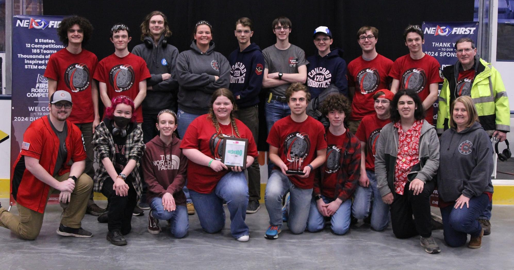

We’re a FIRST (For Inspiration & Recognition of Science and
Technology) Robotics Competition team that serves Concord High
School and the surrounding community. Every year, our team builds a
robot during a six-week build season that adheres to the FIRST
competition guidelines. We also collaborate with the Concord
community to inspire younger students and cultivate their interest
in engineering, all while sharing our fascination and passion for
robotics. We like to think of our team as more than just a club;
we’re all-inclusive and we foster connections among individuals who
share the same interest—STEM! Everyone is welcome to join, and there
are no prerequisites.

at 2024 New England DistrictsWhat is FIRST?
FIRST For Inspiration and Recognition of Science and Technology was
founded by Dean Kamen and Woodie Flowers in 1989, and primarily
serves to get kids excited about engineering and technology.
FIRST encourages students to be kind and professional both on and off the field, and rewards students and teams for helping their community, fellow teams, and eachother to succeed. FIRST promotes students to become passionate hard-working individuals while spreading the values of FIRST itself - inspiring and recognizing achievement in Science and Technology.
FIRST encourages students to be kind and professional both on and off the field, and rewards students and teams for helping their community, fellow teams, and eachother to succeed. FIRST promotes students to become passionate hard-working individuals while spreading the values of FIRST itself - inspiring and recognizing achievement in Science and Technology.
Thank You to Our 2024-2025 Sponsors


The Slavin Family, Sedutto Family, and Harris Family